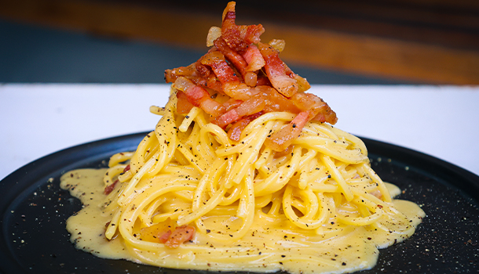

Carbonara

Ingredients
- 21~ Cups of Water
- Salt & Pepper
- 10 oz of Spaghetti Pasta
- 5.3 oz of Guanciale
- 2 Cups of Pecorina Cheese
- 4 Eggs
Steps
- boil the water to cook your pasta in a large pot until al dente.
- Cut the skin off the guanciale (making sure to leave the peppery/seasoned crust),
then slice it into thin strips.
- At a low to medium heat, add the guanciale into the pan, let it cook very slowly
and it will create its own delicious oil.
- Get your mixing bowl and add 4 eggs, then whisk them really well.
- Next, add the pecorino cheese to make this spaghetti carbonara recipe, and lots
of pepper before mixing it together really well. This will create a scrumptious
cream for you to add to your pasta.
- Take out the pasta from the boiling water and add it straight to the pan, making
sure small drops of the water mix into the pan too. Turn off the cook top, so the
pasta and guanciale stop cooking.
- Next, using the ladle, get a full scoop of pasta water out of the pot and add it
to the egg and cheese cream, then mix through well using a fork.
- Turn the cook top back on a low heat, add some pasta water to the pan, and now,
pour the cream over the top, then mix it through using your tongs
- Keep mixing the cream through until it just starts to thicken, stir is through and then serve.
Return to Homepage